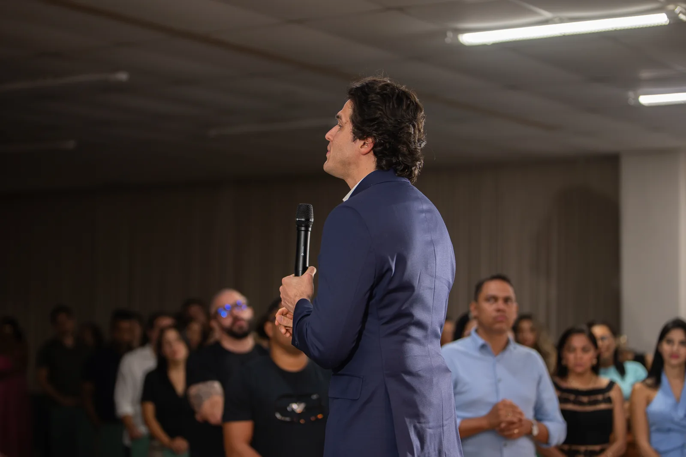

Identidade
- Quem você é como líder
- As emoções que hoje decidem por você
- A sua casa no lugar certo
Meses 5 a 8
Em um ano, a sua empresa nunca mais é a mesma. E você não caminha sozinho.
Doze meses ao lado de um mentor que fala de princípios e de um seleto grupo de até 12 empresários que querem o seu bem. Gente que entende o peso das suas decisões e caminha com você do líder à cultura, e da cultura ao legado.
12 mesesAté 12 empresários4 encontros presenciais
Pedir uma conversa Ver investimento
Mesa fechada · até 12 empresários

Quem decide tudo raramente tem com quem decidir. O Conselho é a mesa onde você para de carregar a empresa sozinho: um mentor, empresários do seu tamanho e um ano inteiro de caminho junto.
A jornada do ano
Meses 1 a 4
Meses 5 a 8
Meses 9 a 12
Para quem é
O negócio cresceu e tudo ainda passa por você.
As decisões mais pesadas você toma sem ter com quem conversar.
Você quer líderes que pensem como dono, e não só que executem.
Uma nova unidade, uma sucessão ou uma meta ousada vêm pela frente.
Você quer crescer sem sacrificar a sua casa e a sua família.
Você quer conviver com empresários do mesmo tamanho, que querem o seu bem.
O que faz parte
Um seleto grupo de até 12 empresários, que entram depois de uma reunião de diagnóstico.
Encontros ao longo dos doze meses, sobre as decisões reais da sua empresa.
Ao longo do ano, com o grupo inteiro na mesma sala.
Um dos quatro presenciais é aberto a quem caminha com você em casa.
Para alguém do seu time passar pela imersão Método Construa.
O seu lugar garantido nas Noites Construa.
Em todos os produtos novos da Legado Leader.
Ao fim dos doze meses, como membro do Conselho Legado.
Investimento
Conselho Legado ATÉ 12 LUGARES
R$ 79.970 por ano
Investimento individual, para o dono
Mesa fechada com um seleto grupo de até 12 empresários · nota pela InLegacy Treinamentos LTDA.
Ninguém caminha sozinho